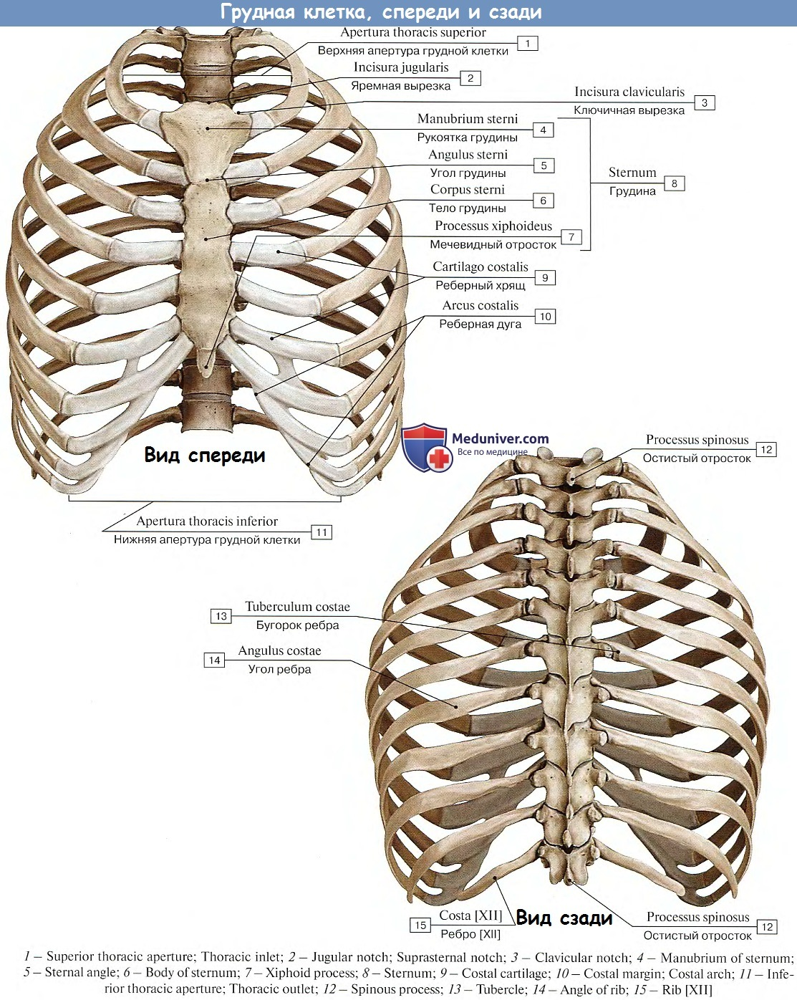

Что такое грудная клетка?
Грудная клетка — это костно-хрящевой каркас, который защищает жизненно важные органы человека, такие как лёгкие, сердце, крупные сосуды и часть пищевода. Она состоит из грудинной кости, двенадцати пар ребёр и грудного отдела позвоночника.
Грудина — центральная часть передней груди: плоская кость, делящаяся на рукоятку, тело и мечевидный отросток. Она соединяется с ключицами и первыми семью парами ребёр при помощи хрящей, что придаёт гибкость и устойчивость конструкции.
Каждый из 12 пар ребёр начинается у позвоночника и спереди соединяется с грудиной через эластичные реберные хрящи. Верхние семь пар — истинные ребра, восемь-десятая пары — ложные ребра, соединённые лишь с хрящом выше, а одиннадцатая и двенадцатая пары — свободные ребра.
Между ребрами расположены межреберные мышцы, которые участвуют в дыхании. При сокращении наружных межрёберных мышц грудная клетка расширяется, облегчая вдох, а внутренние мышцы — при выдохе.
Со стороны спины грудная клетка опирается на грудной отдел позвоночника, состоящий из двенадцати позвонков, между которыми расположены межпозвонковые диски, обеспечивающие амортизацию и подвижность.

Грудная полость разделена на три камеры: левую и правую плевральные ячейки, содержащие лёгкие, и средостение, где расположены сердце, аорта, пищевод, трахея и крупные нервы и сосуды.
Плевра — серозная оболочка, состоящая из двух листков, между которыми находится плевральная жидкость. Она снижает трение грудной клетки и лёгких при дыхании.
С развитием дыхательного усилия при активной физической нагрузке мягкая структура грудной клетки позволяет увеличивать объём лёгких и усиливать дыхание.
В клинической практике грудная клетка важна для диагностики — при снимках и пальпации оцениваются её развитие, наличие переломов, деформаций, таких как кифоз, сколиоз или впалость грудины (воронкообразная грудная клетка).
У женщин грудная клетка также участвует в формировании молочной железы, где расположены ткани, участвующие в лактации.

С возрастом межпозвонковые и реберные хрящи могут кальцифицироваться, снижая гибкость грудной клетки и способствуя риску переломов при падении.
Эргономика дыхательных практик, таких как йога и дыхательная гимнастика, направлена на улучшение подвижности грудной клетки и укрепление её мышечно-костной структуры.
Профилактика травм грудной клетки включает защиту во время спорта, соблюдение осанки, укрепление мышц и контроль плотности костной ткани, особенно у пожилых.